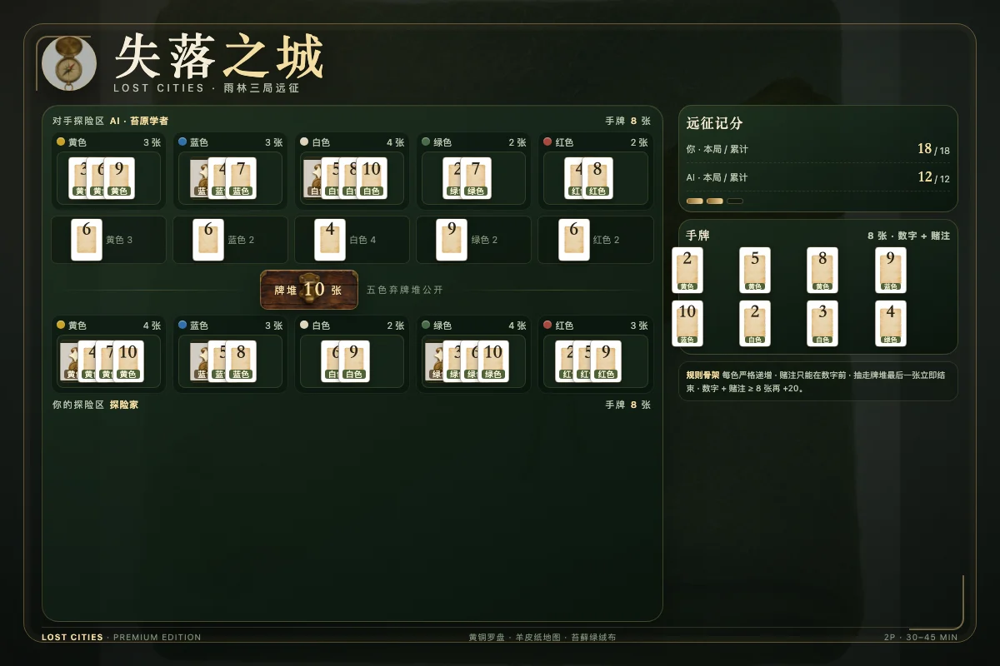
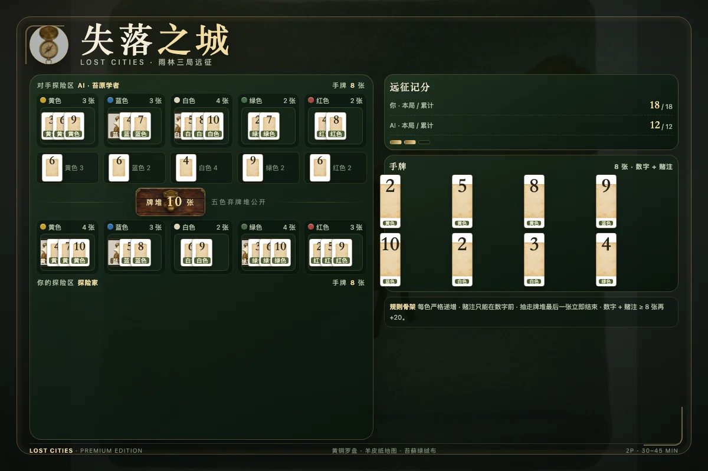

1牌组与目标
《失落之城》是 Reiner Knizia 设计的双人卡牌游戏。整副牌共 60 张，分为五种颜色；每种颜色有数字 2 到 10 的九张数字牌，以及三张赌注牌。双方各自建立五条探险列，尽量让每条列里的数字严格递增，并在三局结束后取得更高的累计总分。
每色 12 张牌：数字 2、3、4、5、6、7、8、9、10 各一张，加三张赌注牌。把五色相加正好是 60 张，洗牌后不会多出或缺少任何一张。本实现提供单人对三档 AI，以及双人联机房间；两者的规则与计分完全一致。
2发牌与开局
将 60 张牌充分洗匀。双方各发 8 张手牌，剩下的 44 张牌面朝下作为牌堆。牌堆旁边留出五个弃牌堆，每个颜色一个，弃牌时牌面朝上，只显示最上面一张。
第一局随机决定先手。之后每一局，由上一局得分较高的一方先手；如果上一局局分相同，则沿用上一局的先手。正式比赛进行三局，三局累计总分决定胜负；总分相同则共享胜利。
3一个回合的两步
轮到你时，必须严格按顺序完成两件事：
- 打出一张牌：从手牌中选一张，放入自己对应颜色的探险列，或弃到对应颜色的弃牌堆顶。
- 抽一张牌：从牌堆顶抽一张，或从任意一个非空弃牌堆顶拿走一张。抽到的牌进入手牌。
抽牌完成后，如果牌堆没有耗尽，轮到对手。整局中双方轮流行动，直到牌堆最后一张牌被抽走。
4探险列：只能向上
每条探险列只能放同色牌。数字牌必须严格递增：新打出的数字必须大于该列最右端的数字。不能相等，也不能更小。
- 空列可以放入该颜色任意数字牌，包括 10；但之后就只能接更大的数字。
- 例如一列已有 4、7，下一张只能是 8、9 或 10；再放 5 或 6 都不合法。
- 五条列彼此独立，不需要凑齐五色，也不必每色都开。
赌注牌的时机
赌注牌只能在该列还没有任何数字牌时打出。可以在同一列连续打出多张赌注，最多三张；一旦放入第一张数字牌，该列就永远不能再添加赌注。
赌注会放大整条列的最终收益或亏损，因此不是“有就用”的牌。没有把握时，把赌注弃掉往往比强行开列更稳妥。
5弃牌堆与信息
弃牌是公开信息：同色弃牌堆的顶牌对所有玩家可见。你可以从任意一个弃牌堆顶拿走一张，但自己本回合刚弃出的那张不能抽。这让你可以主动把对手需要的牌放进弃牌堆，也可能把机会留给对手。
牌堆始终牌面朝下。从牌堆抽牌时，双方都不知道下一张是什么；从弃牌堆抽牌时，你明确知道会拿到哪一张。高水平的对局会频繁地在“摸未知牌”和“拿已知弃牌”之间权衡。
当牌堆最后一张牌被抽走时，本局立即结束。抽牌者完成这次抽牌后马上结算，不会再把回合交给对手，也不会额外补一轮。
6计分：三种情况
五条探险列分别结算，然后把五列得分相加。每条列只可能是以下三种情况之一：
“总牌数”指该列里的数字牌与赌注牌之和。达到 8 张时，在按上述公式算出的分数之外，再额外加 20 分。注意：如果一条列只有赌注牌，不走“数字公式”，只按每张 -20 计算。
算几个例子
- 黄色列有 2、3、4、5、6，数字和 20，无赌注：(20 − 20) × 1 = 0。
- 蓝色列有 3、4、5，另有两张赌注：(12 − 20) × 3 = -24。
- 绿色列有两张赌注但没有数字：-40。
- 红色列有 4、5、6、7、8、9、10 和一张赌注，共 8 张：(49 − 20) × 2 + 20 = 78。
7三局赛制与结果
每局结束时分别记录双方五列得分之和，即使为负也照实记录。三局结束后，把三局局分相加得到累计总分。累计总分较高者获胜；如果完全相同，则两位玩家共享胜利，而不是再用牌堆或手牌做隐藏的加赛。
每局之间重新洗牌、重新发 8 张手牌并重置五色探险列，但累计总分保留。上一局得分较高者成为下一局先手；局分相同则沿用上一局先手。这样三局不是三个互不相关的小游戏，而是一条连续的远征路线。
平局只影响最终胜负，不会抹去每一局的局分；结果页仍会列出第 1、2、3 局的分数，便于复核总分。
8策略提示
- 不要五色全开：每条列都需要跨过 20 分的门槛，开得太多会让每列都很弱。通常集中在两到三色。
- 赌注与数字一起看：手里同色数字多、且能连续接上时，赌注才有价值；只有一张数字牌就押注，风险极高。
- 弃牌也是布局：把对手需要的同色牌弃在堆顶，可能诱使对手抽走；但对方也可能正好需要，反过来利用你。
- 关注牌堆张数：牌越少，未完成的列越可能来不及补救。领先时加速结束、落后时争取时间，是两种不同节奏。
- 8 张奖励是长线目标：一条列达到 8 张会额外 +20，但强凑八张可能牺牲其他列，先算清楚总账。
9图示：真实局面



10常见问题 FAQ
可以从自己刚弃的牌堆抽牌吗？
不可以。你本回合弃出的那张牌虽然在自己同色弃牌堆顶，但不能作为本回合的抽牌来源。可以抽另一色弃牌堆顶，或抽牌堆。
已经有数字牌的探险列还能加赌注吗？
不能。赌注牌只能在该列还没有任何数字牌时打出；一旦有数字牌，该列即永久锁定，不能再加赌注。
可以连续放多张赌注牌吗？
可以，最多三张，而且必须都在第一张数字牌之前。三张赌注会让整列的倍数变成 4 倍，风险也最大。
数字牌可以相同或更小吗？
不可以。探险列的数字必须严格递增。例如已有 7，下一张只能是 8、9 或 10；相同数字也不能放。
抽走牌堆最后一张后对手还能行动吗？
不能。最后一张牌被抽走的瞬间本局立即结束，抽牌者不再额外行动，对手也没有补回合。然后按五列结算本局。
“8 张奖励”是数字牌 8 张还是总牌数 8 张？
是该列的数字牌与赌注牌合计达到 8 张。达到后在该列公式得分之外再 +20。只有赌注、没有数字的列不套用数字公式，也不拿这个奖励。
只有赌注牌怎么算分？
每张赌注 -20 分：一张 -20，两张 -40，三张 -60。不会乘数字公式，也不会因为张数少而变成 0。
三局总分相同怎么办？
共享胜利。总分相同不会再看单局最高分或手牌；结果页会保留三局局分，方便复核。
下一局谁先手？
上一局局分较高者先手；如果上一局局分相同，则沿用上一局先手。
可以一局都不开某色吗？
可以。没有该色任何牌的列记 0 分。只开两三条强势颜色，通常比五色全开更稳。
11规则来源
中文视频来源：
- B 站 BV1bt411K79U《【汤米酱】桌游教学085 Lost Cities 失落之城》
- B 站 BV197411N7nn《【勃根地桌遊】失落的城市 Lost Cities 桌遊教學影片》
英文规则参考：UltraBoardGames — Lost Cities Game Rules（ultraboardgames.com/lost-cities/game-rules.php）。
本页规则以实体规则为准；页面实现额外明确：抽走最后一张立即结束、8 张奖励计入赌注、三局累计以及上一局胜者先手。若不同版本视频在细节上有差异，以本页和游戏内引擎的固定口径为准。